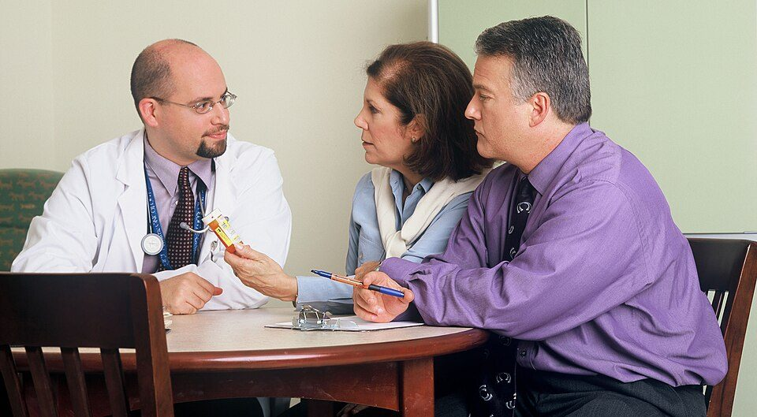

Información divulgativa. No sustituye la valoración de tu equipo médico ni sirve para decidir un tratamiento.

.jpg){kind=link}
Qué esperar
La primera consulta suele ser larga y cargada de información. El oncólogo revisará tu historia y las pruebas, te explorará y te contará qué sabe del tumor, qué falta por saber y qué opciones hay. Muchas veces el plan definitivo no se decide ese día: se esperan pruebas o se presenta el caso en el comité de tumores, una reunión de cirujanos, oncólogos, radioterapeutas, patólogos y radiólogos que decide en conjunto.
Es normal salir sin recordar la mitad de lo que se dijo. Por eso conviene prepararla.
Antes de ir
- Documentos: informes de urgencias, de otros especialistas, de anatomía patológica y de las pruebas de imagen (si las tienes en CD o en una aplicación, llévalas).
- Lista de medicamentos que tomas, incluidos productos de herbolario y suplementos, y tus alergias.
- Otras enfermedades y operaciones previas.
- Antecedentes familiares de cáncer: quién, qué tipo y a qué edad.
- Tus preguntas por escrito, ordenadas por importancia.
- Una libreta o el móvil para tomar notas. Puedes pedir permiso para grabar la explicación.
Ve acompañado
Si puedes, ve con alguien de confianza. Ayuda a escuchar, a recordar y a preguntar lo que tú no te atrevas. Decide antes qué papel quieres que tenga.
Preguntas que suelen servir
Sobre el diagnóstico - ¿Qué tipo de cáncer tengo y en qué estadio está? - ¿Faltan pruebas? ¿Cuándo tendremos todos los resultados?
Sobre el tratamiento - ¿Cuál es el objetivo: curar, controlar la enfermedad o aliviar síntomas? - ¿Qué opciones hay y por qué me recomienda esta? - ¿Cuánto dura, con qué frecuencia vendré y qué efectos secundarios son más probables? - ¿Hay algún ensayo clínico para mi caso? - ¿Afectará a mi fertilidad, a mi trabajo o a mi vida sexual?
Sobre la organización - ¿A quién llamo si tengo un problema? ¿Hay un teléfono de enfermería? - ¿Cuándo es la próxima cita? - ¿Dónde encuentro información fiable?
Tus derechos
Tienes derecho a recibir información comprensible, a decidir sobre tu tratamiento, a que se respete tu intimidad y a acceder a tu historia clínica (Ley 41/2002 de autonomía del paciente). También puedes decir cuánta información quieres recibir o pedir que se la den a otra persona.
Después de la consulta
Repasa tus notas ese mismo día. Si algo no ha quedado claro, apúntalo para la próxima visita o llama a la enfermera de oncología. Si tienes que tomar una decisión importante, tienes derecho a pensarlo: ver Decisiones compartidas y segunda opinión.
Ver también: Cómo entender el informe de anatomía patológica, Cuándo llamar a tu equipo durante el tratamiento, Fertilidad y cáncer.
Fuentes
- Ley 41/2002, de 14 de noviembre, básica reguladora de la autonomía del paciente. boe.es
- National Cancer Institute. Questions to ask your doctor about cancer (en inglés). cancer.gov
- Stiggelbout AM, et al. Shared decision making: really putting patients at the centre of healthcare. BMJ. 2012;344:e256. doi:10.1136/bmj.e256